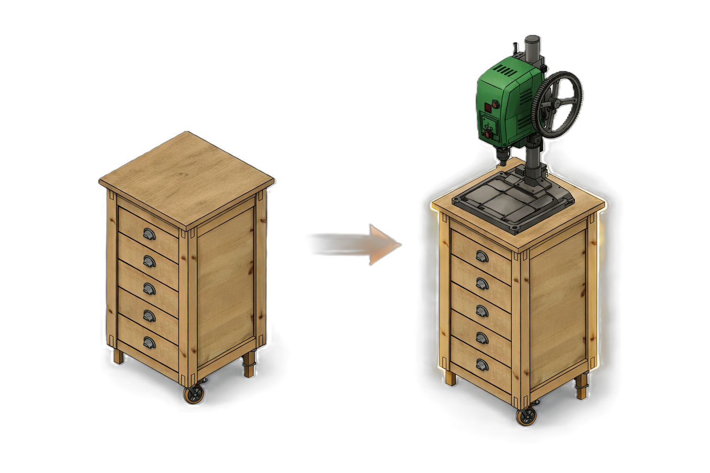

Die Idee
Die Idee
Der Bohrmaschinentisch ist keine Neuentwicklung, sondern eine gezielte funktionale Ableitung des Standardtischs. Ziel war es, eine stabile, präzise Arbeitsfläche für Bohrarbeiten zu schaffen, ohne das bestehende System zu verändern.

Korpus, Raster, Baugruppen und Fertigungsprinzipien bleiben vollständig erhalten. Anpassungen erfolgen ausschließlich dort, wo sie für den Einsatz an der Bohrmaschine notwendig sind.
 Die Baugruppen
Die Baugruppen
Alle Baugruppen entsprechen dem Standardtisch, mit Ausnahme der Tischplatte und der obersten Schublade.
Die Fertigung des Bohrmaschinentischs folgt grundsätzlich den Fertigungsprinzipien des Standardtischs. Alle nicht aufgeführten Baugruppen werden identisch hergestellt.
Im Folgenden sind ausschließlich die abweichenden oder ergänzenden Fertigungsschritte beschrieben.
 Tischplatte
Tischplatte
Die Tischplatte besteht aus einer 25 mm starken MDF‑Platte (600 × 600 mm). Zwei gefräste Nuten nehmen C‑Nutschienen aus Aluminium auf und ermöglichen das flexible Positionieren von Anschlägen und Spannmitteln.
Stückliste – Tischplatte Bohrmaschinentisch
| Bauteil | Anzahl | Maße | Material | Beschreibung |
|---|---|---|---|---|
| Tischplatte | 1 | 600×600×25 mm | MDF |
MDF‑Platte 25 mm, Zuschnitt Baumarkt‑Zuschnitt |
| C‑Profil, rot eloxiert | 2 | 600 mm | Aluminium |
C‑Profil für die Tischplattenführung, rot eloxiert Amazon PartnerNet |
| SPAX 3×12 | 8 | 3×12 mm | Stahl |
Befestigung des C‑Profils an der Tischplatte Amazon PartnerNet |
Fertigung der Tischplatte
Die Fertigung der Tischplatte basiert auf der Tischplatte des Standardtischs und wird um funktionale Elemente für den Einsatz an der Bohrmaschine ergänzt. Grundabmessungen, Materialwahl und Oberflächenbehandlung bleiben unverändert.
Abweichend vom Standardtisch werden in die Tischplatte zwei parallele Nuten eingefräst, in die anschließend C‑Profile aus Aluminium eingesetzt werden. Diese dienen als Führung und Befestigungsebene für Anschläge und Zubehör.
-
Zuschnitt und Vorbereitung
Die Tischplatte besteht aus einer MDF‑Platte mit den Maßen 600 mm × 600 mm × 25 mm. Die Platte wird als fertiger Zuschnitt verwendet. Vor der weiteren Bearbeitung werden die Kanten leicht gebrochen und die Oberfläche auf Beschädigungen geprüft.
-
Fräsen der Nuten
In die Oberseite der Tischplatte werden zwei parallele Nuten eingefräst. Die Position der Nuten orientiert sich an der Mittelachse der Platte und ist symmetrisch angeordnet. Breite und Tiefe der Nuten werden so gewählt, dass die C‑Profile spielfrei eingesetzt werden können.
Das Fräsen erfolgt mit einer Oberfräse und Parallelanschlag. Um saubere Kanten zu erzielen, werden die Nuten in mehreren Fräsgängen mit geringer Zustelltiefe ausgeführt.
Tipp: Beim Fräsen der Nuten in der Tischplatte empfiehlt es sich, vorab ein Probestück aus Restmaterial zu verwenden. So lassen sich Frästiefe und Passung der C‑Profile exakt einstellen, bevor die eigentliche Tischplatte bearbeitet wird.
-
Einsetzen der C‑Profile
Nach dem Fräsen werden die C‑Profile aus Aluminium probeweise eingesetzt und ausgerichtet. Die Profile schließen bündig mit der Oberfläche der Tischplatte ab.
Die Befestigung der C‑Profile erfolgt mit SPAX‑Schrauben 3×12 mm. Die Schrauben werden gleichmäßig verteilt gesetzt und so versenkt, dass sie die spätere Nutzung der Profile nicht beeinträchtigen.
Achtung: Beim Einschrauben von SPAX‑Schrauben in MDF darf das Drehmoment des Akkuschraubers nicht zu hoch eingestellt werden. MDF bietet wenig Widerstand, sodass Schrauben bei zu hohem Drehmoment leicht überdreht werden und anschließend keinen Halt mehr haben.
Abschließend wird geprüft, ob die Profile fest sitzen und die Oberfläche der Tischplatte plan und ohne Überstände ist.
Oberste Schublade – 1 HE Doppelt‑Korpus
Die oberste Schublade basiert auf der 1 HE‑Standardschublade, ist jedoch als Doppelt‑Korpus ausgeführt. Zwei Nutzungsebenen werden innerhalb einer Schublade kombiniert.
- Rückteilhöhe reduziert auf 68 mm
- Seitenteile mit zusätzlichen Bohrungen für inneren Vollauszug
- Obere Ebene für häufig genutzte Bohrer
- Untere Ebene für Ersatz‑ und Spezialwerkzeuge
Schubladenkorpus außen
Stückliste – Oberste Schublade (Außenkorpus)
| Bauteil | Anzahl | Maße | Material | Beschreibung |
|---|---|---|---|---|
| Schubladenfront | 1 | 392×110×18 mm | Kiefer |
Zuschnitt aus Leimholzplatte 800×400×18 mm BAUHAUS – Artikel 23141021 |
| Schubladenseite links | 1 | 392×110×18 mm | Kiefer |
Zusätzliche Bohrungen für inneren Vollauszug Zuschnitt aus Leimholzplatte 800×400×18 mm |
| Schubladenseite rechts | 1 | 392×110×18 mm | Kiefer |
Zusätzliche Bohrungen für inneren Vollauszug Zuschnitt aus Leimholzplatte 800×400×18 mm |
| Schubladenrückteil | 1 | 392×68×18 mm | Kiefer |
Reduzierte Höhe für den Doppelt‑Korpus Zuschnitt aus Leimholzplatte 800×400×18 mm |
| Schubladenboden | 1 | 392×350×6 mm | MDF |
MDF‑Platte 6 mm – Zuschnitt Hornbach Zuschnitt |
| Schubladenschiene TSS4613SC‑350 | 2 | 350 mm | Stahl |
SOTECH Schubladenschiene mit Selbsteinzug, belastbar bis 35 kg Amazon PartnerNet |
| Schrauben Stahlia | 30 | – | Stahl |
Befestigung der Auszüge Amazon PartnerNet |
Zwischenfazit – Baugruppen: Der äußere Schubladenkorpus des Bohrmaschinentischs entspricht in Aufbau, Material und Verbindungstechnik vollständig der Schublade des Standardtischs. Front, Seiten und Boden bleiben unverändert. Lediglich das Rückteil wird in der Höhe reduziert ausgeführt, um den innenliegenden Schubladenkorpus aufnehmen zu können.
Fertigung des äußeren Schubladenkorpus
Die Fertigung des äußeren Schubladenkorpus erfolgt nach dem gleichen Ablauf wie beim Standardtisch. Material, Lamello‑Verbindungen sowie die Ausführung der Bodennut bleiben unverändert.
Abweichend vom Standardtisch wird ausschließlich das Rückteil in der Höhe reduziert ausgeführt. Alle übrigen Bauteile entsprechen der Standard‑Schublade.
-
Zuschnitt
Front, Seiten und Rückteil werden gemäß den technischen Zeichnungen zugeschnitten. Die Längen entsprechen der Standard‑Schublade; die Abweichung betrifft ausschließlich die Höhe des Rückteils.
-
Lamello‑Fräsungen
Front, Seiten und Rückteil erhalten die Lamello‑Fräsungen gemäß Zeichnung. Die Positionen entsprechen dem Standardtisch und gewährleisten eine spannungsfreie Ausrichtung beim Verleimen.
-
Bohrungen für Auszüge
In beiden Seitenteilen werden die Bohrungen für die Befestigung der Vollauszüge gemäß Zeichnung eingebracht. Das rechte Seitenteil wird spiegelbildlich zum linken Seitenteil gebohrt, um die symmetrische Anordnung der Auszüge zu gewährleisten.
-
Bodennut
Die Seitenteile erhalten die Nut für den Schubladenboden. Ausführung und Position entsprechen der Standard‑Schublade.
-
Verleimen des Korpus
Zunächst werden Front und Seitenteile miteinander verleimt. Anschließend wird das reduzierte Rückteil eingesetzt und ebenfalls verleimt. Während der Presszeit werden die Diagonalen kontrolliert, um die Rechtwinkligkeit des Korpus sicherzustellen.
Zwischenfazit – Fertigung: Die Fertigung des äußeren Schubladenkorpus unterscheidet sich nur in einem klar definierten Punkt vom Standardtisch: der reduzierten Höhe des Rückteils. Der Fertigungsablauf bleibt ansonsten vollständig identisch.
Schubladenkorpus innen
Stückliste – Oberste Schublade (Innenkorpus)
| Bauteil | Anzahl | Maße | Material | Beschreibung |
|---|---|---|---|---|
| Schubladenseite oben | 2 | 374×62×18 mm | Kiefer |
Träger für die obere Nutzungsebene Zuschnitt aus Leimholzplatte Naturwuchs Kiefer 800×200×18 mm BAUHAUS – Artikel 23140994 |
| Schublade Frontteil innen | 1 | 385×62×18 mm | Kiefer |
Innenkorpus, verschraubt und gedübelt Zuschnitt aus Leimholzplatte Naturwuchs Kiefer 800×200×18 mm |
| Schublade Rückteil innen | 1 | 385×62×18 mm | Kiefer |
Innenkorpus, verschraubt und gedübelt Zuschnitt aus Leimholzplatte Naturwuchs Kiefer 800×200×18 mm |
| Schubladenboden innen | 1 | 386×374×5 mm | MDF |
MDF‑Platte 6 mm – Zuschnitt Hornbach Zuschnittservice |
| Vollauszug SOTECH KV2‑35‑H45‑L350‑SE | 2 | 350 mm | Stahl |
SOTECH Schubladenschiene mit Selbsteinzug, belastbar bis 35 kg Amazon PartnerNet |
| Schrauben Stahlia | 24 | 6.3 x 11.5 mm | Stahl |
Befestigung der Auszüge B0C7ZJ6NY1 – Amazon PartnerNet |
| Spax 3.5×30 | 8 | 3.5×30 mm | Stahl |
Verschraubung des Innenkorpus B0B7XNNBQ7 – Amazon PartnerNet |
| Holzrunddübel 6×30 | 4 | 6×30 mm | Holz |
Verbindung der Innenkorpus‑Bauteile B004WO6H8O – Amazon PartnerNet |
Zwischenfazit – Baugruppen: Der innere Schubladenkorpus ist eine eigenständige Schublade, die innerhalb des äußeren Schubladenkorpus geführt wird. Aufbau, Material und Verbindungstechnik orientieren sich am Standardtisch, werden jedoch in den Abmessungen an den verfügbaren Bauraum angepasst.
Fertigung und Montage des inneren Schubladenkorpus
-
Zuschnitt aus der Leimholzplatte
Ausgangsmaterial ist eine Leimholzplatte Naturwuchs Kiefer 800×200×18 mm. Mit der Kapp‑Zugsäge werden zunächst zwei Rohstücke auf Länge zugeschnitten: ein Stück 380×200×18 mm für die beiden Seitenteile sowie ein Stück 404×200×18 mm für Front‑ und Rückteil.
Anschließend werden diese Rohstücke mit der Tischkreissäge oder Bandsäge der Länge nach aufgetrennt. Aus dem 380‑mm‑Rohstück entstehen zwei Seitenteile mit 380×62×18 mm. Aus dem 404‑mm‑Rohstück entstehen zwei Front‑/Rückteile mit 404×62×18 mm.
-
Zuschnitt des Schubladenbodens
Der Schubladenboden wird aus einer 6 mm starken MDF‑Platte zugeschnitten. Die Abmessungen orientieren sich an der Innenbreite und -tiefe des äußeren Schubladenkorpus, abzüglich der Materialstärke der Seitenteile. Es entsteht ein Boden mit den Maßen 386×374×6 mm.
-
Bohren nach Zeichnung
In Front‑ und Rückteil sowie in beiden Seitenteilen des inneren Schubladenkorpus werden alle Bohrungen gemäß den jeweiligen Einzelzeichnungen eingebracht. Dazu gehören die Bohrungen für die Holzrunddübel sowie die Durchgangs‑ und Senkbohrungen für die SPAX‑Schrauben.
Voraussetzung für eine passgenaue Montage ist ein exakter Anriss aller Bohrpositionen. Die Bohrungen für die Holzrunddübel müssen rechtwinklig und maßgenau ausgeführt werden. Zur Sicherstellung der Bohrgenauigkeit empfiehlt sich der Einsatz einer Holzdübel‑Bohrschablone (z. B. Holzdübel‑Bohrschablone).
Bei der Vorbereitung der Seitenteile für den späteren Einbau von Vollauszügen ist zu beachten, dass das rechte Seitenteil spiegelbildlich zum linken Seitenteil gebohrt wird. Die Bohrbilder dürfen nicht identisch übernommen werden.
-
Vormontage der offenen Baugruppe
Front und Rückteil werden mit einem Seitenteil über Holzrunddübel 6×30 positioniert und mit SPAX‑Schrauben 3.5×30 verschraubt. Es entsteht eine U‑förmige, nach einer Seite offene Baugruppe.
Für das rechtwinklige Ausrichten und Fixieren der Bauteile während der Verschraubung haben sich Eckenspanner bewährt (z. B. Eckenspanner).
-
Einsetzen des Schubladenbodens
Der Schubladenboden wird in die offene Baugruppe eingesetzt. Dieser Arbeitsschritt ist nur möglich, solange eine Seite des Korpus noch nicht montiert ist.
-
Schließen des Korpus
Das zweite Seitenteil wird angesetzt, über die verbleibenden Holzrunddübel ausgerichtet und mit den restlichen SPAX‑Schrauben verschraubt. Der innere Schubladenkorpus ist damit vollständig montiert.
Zwischenfazit – Fertigung und Montage: Der innere Schubladenkorpus entsteht aus dem Rohmaterial durch Zuschnitt, Bohren, Vormontage einer offenen Baugruppe, Einsetzen des Bodens und abschließendes Verschrauben. Die Reihenfolge ist konstruktiv zwingend.
 Werkzeuge und Ausrüstung
Werkzeuge und Ausrüstung
 Sägen
Sägen
- Kapp‑Zugsäge (für das Ablängen der Rohstücke 380×200 mm und 404×200 mm).
- Tischkreissäge oder Bandsäge (zum Auftrennen der Rohstücke in die finalen Breiten 62 mm).
 Fräsen und Formgebung
Fräsen und Formgebung
- Oberfräse mit Parallelanschlag (für die beiden C‑Nuten in der MDF‑Tischplatte).
- Kantenfräse (zum Brechen der Kanten an MDF‑Platte und Schubladenteilen).
- Lamello‑Fräse (nur für den äußeren Schubladenkorpus).
 Bohren und Bohrhilfen
Bohren und Bohrhilfen
- Standbohrmaschine / Tischbohrmaschine (für präzise Durchgangs‑ und Senkbohrungen).
- Akkubohrschrauber (für Vorbohren, kontrolliertes Verschrauben und Montage).
- Kegelsenker (für bündige Schraubenköpfe und saubere Sichtflächen).
- Holzdübel‑Bohrschablone (für die 6×30‑mm‑Dübelbohrungen des inneren Schubladenkorpus).
- Pocket‑Hole‑Schablone (für verdeckte Verschraubungen an den Seitenplatten).
 Spannhilfen
Spannhilfen
- Eckenspanner (für das rechtwinklige Ausrichten bei der Vormontage der U‑Baugruppe).
- Zwingen (für das Verleimen des äußeren Korpus und Fixieren der Tischplatte).
 Oberfläche und Finish
Oberfläche und Finish
- Orbitalschleifer (für leichte Schleifarbeiten an MDF und Kiefer).
 Mess- und Markierwerkzeuge
Mess- und Markierwerkzeuge
- Anreißwerkzeuge, Winkel, Messschieber / Metermaß (für exakte Bohrbilder und Maßkontrolle).
- Winkelschablone (für reproduzierbare Winkelkontrolle bei wiederkehrenden Baugruppen).
 Fazit
Fazit
Der Bohrmaschinentisch erweitert den Standardtisch gezielt um Funktionen für präzise Bohrarbeiten. Das bestehende System bleibt vollständig erhalten und wird lediglich dort ergänzt, wo es funktional sinnvoll ist.
Die klare Ableitung vom Standardtisch sorgt dafür, dass Fertigung, Materialeinsatz und Montageablauf vertraut bleiben. Dadurch lässt sich der Bohrmaschinentisch reproduzierbar bauen und zugleich passgenau in das bestehende Werkstattsystem integrieren.